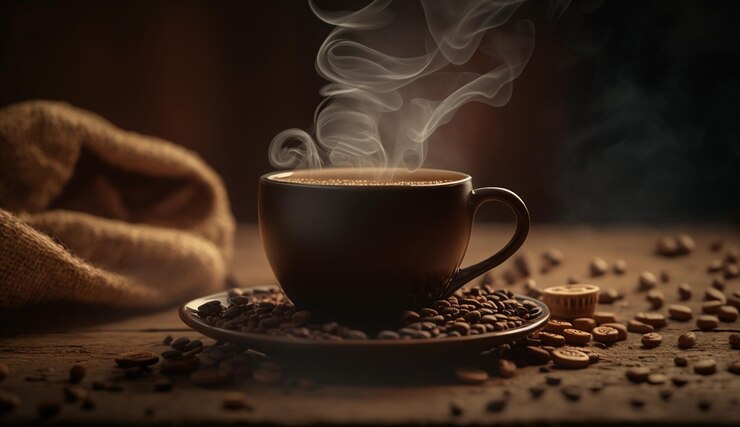

Home
Coffee

"Java, Brew, Rocket Fuel, Worm Dirt, Espresso Lane, Joe, High Octane" and my personal favorite "Bean Juice"
Many names, one magical substance.
Though you can quickly fall into a rabbit hole of finding that perfect cup of bean juice.
We're gonna focus on the quick and easy.
What you'll need:
- 1 cup (8oz) hot water
- 1 tsp instant coffee
- 2 tsp brown sugar
- Optional
Steps
Step 1
Add sugar then coffee into a mug.Step 2
Water should be hot but not boiling, pour into the mug.Step 3
Stir and enjoy while hot.Note
- add the pinch of salt if coffee is overly bitter.
- take time to enjoy the aroma as you drink.